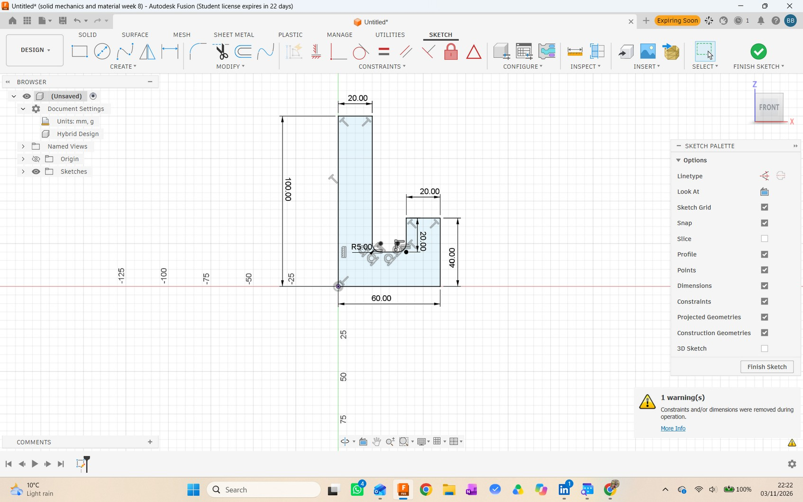
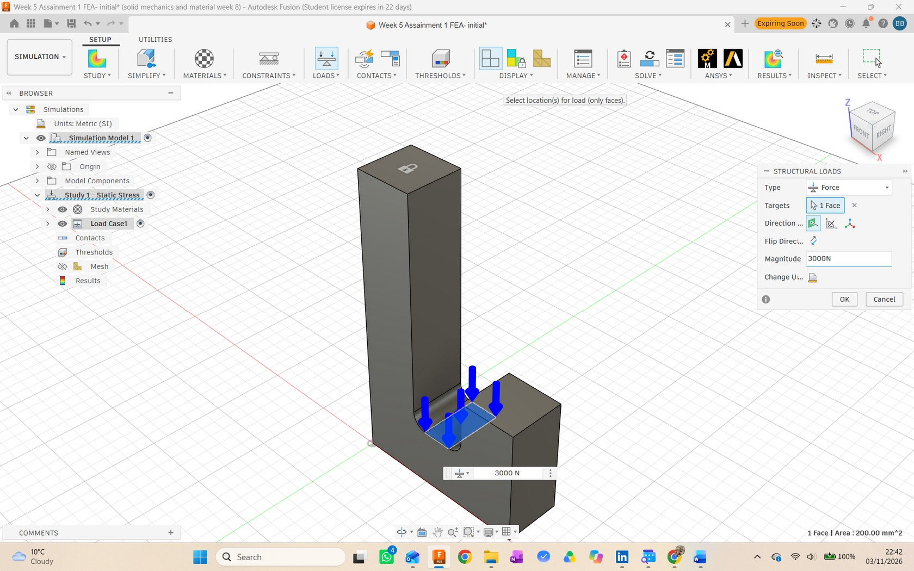
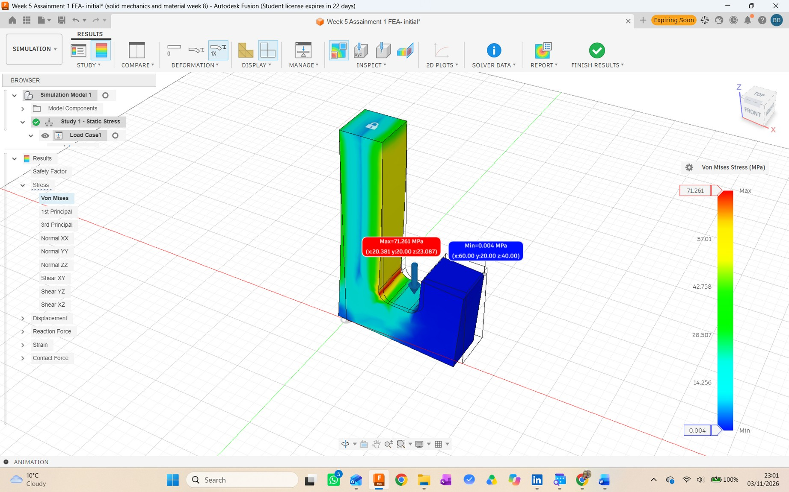
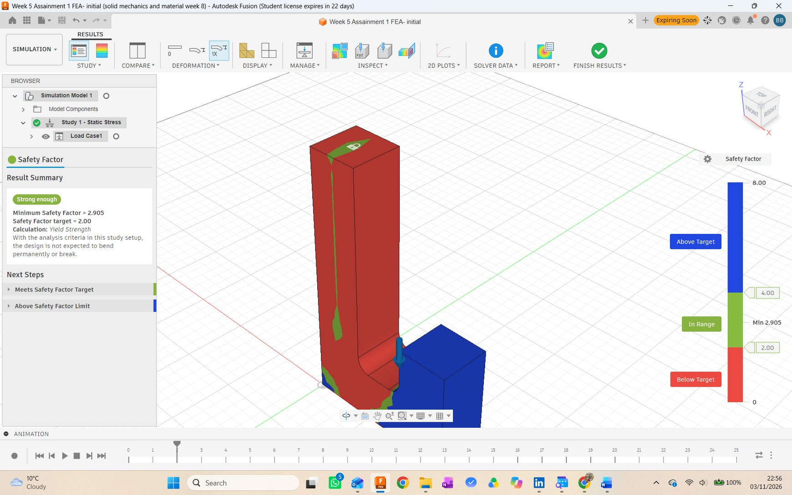

Initial Hook Design: Static-Stress Analysis
I modelled the initial hook in Autodesk Fusion 360 and evaluated it with a linear static-stress study. This page presents the baseline geometry, assigned material, boundary conditions, and results from that submitted study.
Model and analysis setup
Geometry and material
- Overall profile: 100 mm high × 60 mm wide
- Section depth: 20 mm; inside transition: R5 mm
- Mild Steel from the Fusion 360 material library
- Young's modulus: 220 GPa; Poisson's ratio: 0.275
- Yield strength used for the coursework FoS: 207 MPa
- Initial volume: 64,214.602 mm³
Boundary conditions and mesh
- Study type: Linear Static Stress
- Top face fixed with Ux, Uy and Uz restrained
- 3000 N downward force applied on the hook crook face
- Automatic parabolic mesh with curved elements
- Solver data reported 228 tetrahedral elements
Results and mechanical interpretation
The maximum von Mises stress was 71.261 MPa, located at x = 20.381 mm, y = 20.000 mm, z = 23.087 mm in the Fusion 360 model coordinates. The reported minimum stress was 0.004 MPa.
The applied force acts away from the fixed upright, so the hook carries bending. The highest reported stress occurs at the inside transition, where the load path turns through the curved section. The result is consistent with a local stress concentration at that geometry.
Factor-of-safety check
Using the coursework yield strength and the simulated maximum stress:
FoS = 207 MPa ÷ 71.261 MPa = 2.90485 ≈ 2.905
That result exceeds the stated target of 2.00 in this study setup. Fusion 360 also reported a minimum safety factor of 2.905.
Fusion 360 evidence



